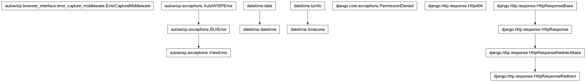

autowisp.browser_interface.error_capture_middleware module
Class Inheritance Diagram

Django middleware recording errors that escape a BUI view.
When a view raises, this captures a lightweight request snapshot onto the
error and records it as a queryable Error row plus detail sidecar
(via persist_error), so web failures become the same durable records
as pipeline failures.
Rather than letting Django render its technical exception page, it then
keeps the user inside the BUI: it queues a dismissible message and
redirects back to where the user was, so a failure becomes something the
user can read and act on (the full technical detail stays available on
the error-detail page). Django’s own Http404 / PermissionDenied
control-flow exceptions are deliberately left for Django to handle.
The request snapshot records keys only – never query/POST values – to avoid persisting user-entered secrets.
- class autowisp.browser_interface.error_capture_middleware.ErrorCaptureMiddleware(get_response)[source]
Bases:
objectPersist an
AutoWISPError(or wrapped view error) on failure.Uses Django’s
process_exceptionhook, which fires when a view raises before the exception is converted to a 500 response.- process_exception(request, exception)[source]
Record
exceptionand keep the user inside the BUI.Records the (possibly wrapped) error with a request snapshot, then – instead of returning
Noneand letting Django render its technical exception page – queues a dismissible message (linking to the error-detail page) and redirects back to where the user was. Django’sHttp404/PermissionDeniedare passed through untouched so their normal 404/403 handling stands. Everything here is best-effort: if recording or redirecting itself fails, fall back toNoneso Django handles the original error.- Parameters:
request – The Django request being handled.
exception (BaseException) – The exception the view raised.
- Returns:
HttpResponseRedirect to stay in the BUI, or
Noneto defer to Django (for 404/403 and on internal failure).
- autowisp.browser_interface.error_capture_middleware._request_snapshot(request)[source]
Capture path / view / parameter keys (never values) from a request.
Best-effort: any attribute that cannot be read is simply omitted, so snapshotting a request can never itself raise.
- Parameters:
request – The Django request (or any object exposing the same attributes).
- Returns:
The request context to attach to the error.
- Return type:
- autowisp.browser_interface.error_capture_middleware._safe_return_url(request)[source]
Pick an in-BUI URL to send the user back to after an error.
Prefers the page the request came from (
HTTP_REFERER) so the user stays where they were, but only when it is same-host and not a GET page pointing back at itself (which would redirect-loop on a page that always errors). Falls back to the BUI home page.- Parameters:
request – The Django request being handled.
- Returns:
A URL safe to redirect to within the BUI.
- Return type: